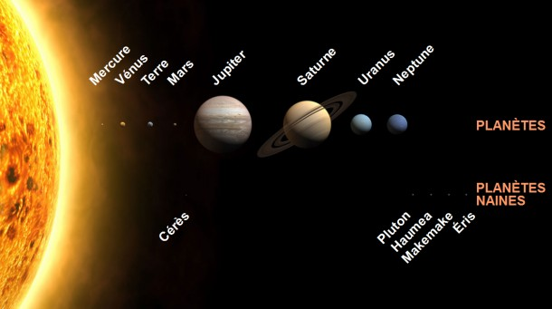

Il se compose de 13 planètes:Cinq planètes naines:
Ce sont des objets célestes du Système solaire de classe intermédiaire entre une planète et un petit corps du Système solaire"Les 8 restantes se partagent en deux groupes:Les planetes Telluriques:
Ce sont les plus petites et les plus proches du soleil. Elle se composent de roche.
Les géantes gazeuses:
Elles sont de gros diamètres et sont plus éloignées du soleil que les telluriques. Elles sont faites principalement de gaz.
Petite Astuce Pour retenir l'ordre des planetes dans le systeme solaire 😉:

Autour de la quelle gravitent des corps célestes (planètes,Astéroïdes ,Comètes ,Satellites ….)Le Système solaire est situé en périphérie de la galaxie , dans l'un des bras spiraux appelé bras d'Orion, à environ 27.000 années-lumière du centre autour duquel il tourne à une vitesse de 230 km/s.Le systeme solaire est un ensemble compose d’une étoile appelé,«Soleil»